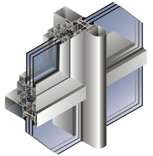
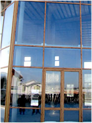

Светопрозрачные изделия из аллюминия – один из самых надежных и долговечных способов остекления. Востребованность алюминиевых оконных конструкций объясняется широким спектром преимуществ, которые этот металл имеет перед другими материалами, используемыми для производства светопрозрачных конструкций.
Во-первых – долговечность.
Оконные конструкции из этого легкого и прочного металла прослужат около 80 лет, что несоизмеримо со сроками эксплуатации окон произведенных из дерева или пластика.
Во-вторых – надежность.
Высокая конструкционная прочность алюминиевого профиля делает конструкции, собранные из него, гораздо более надежными. Алюминиевые профильные системы, используемые в производстве компанией «Окна Формат» состоят из 50 профилей, отлитых путем экструзии из анодированного сплава, содержащего первичный алюминий, а также кремний, добавляемый для улучшения литейных свойств сплава и магний, повышающий прочностные характеристики.
Легкость и простота монтажа.
Оконный профиль из алюминия кроме жесткости отличается необычайной легкостью, следовательно, получившиеся конструкции удобны в монтаже и даже при крупногабаритных размерах и использовании большого числа элементов не перегружают несущие поверхности остекляемых сооружений.
Отличная тепло - и звукоизоляция.
Благодаря использованию полиамидных термомостов при производстве профиля теплой сери, так называемое «теплое» алюминиевое остекление имеет высокие параметры тепло и звукоизоляции.
Устойчивость алюминиевого профиля к механическим повреждениям позволяет конструкциям в течение всего срока службы сохранять внешний вид неизменным.
Еще одно преимущество окон из алюминия - их повышенная устойчивость к воздействию ультрафиолета, а также перепадам температур. Под действием солнечных лучей, жары или мороза алюминиевые оконные конструкции не обесцветятся, не растрескаются и не претерпят никаких механических изменений.
Ну и последнее, немаловажное во многих случаях преимущество использования алюминия для остекления - возможность производства крупногабаритных конструкций. Алюминиевый профиль незаменим для производства входных групп, окон большого размера, а также фасадных светоотражающих конструкций.
Компания «Окна Формат» использует для изготовления алюминиевых светопрозрачных конструкций профильные системы NEW TEC, производства итальянского концерна «New Tec Group», позволяющие в кратчайшие сроки производить теплое и холодное остекление балконов и лоджий, а также изготавливать крупногабаритные конструкции любого уровня сложности, в том числе и по эскизам заказчика. Команда опытных специалистов быстро и качественно осуществит весь комплекс работ по проектированию, разработке, изготовлению и монтажу алюминиевых конструкций, вам же останется только наслаждаться результатом.